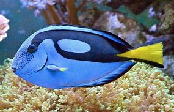

¿Qué es un cirujano azul?
Los cirujanos azules son pequeños peces que viven en arrecifes de coral en el Indo-Pacífico. Los animales son fáciles de divisar gracias a su coloración vibrante característica que consta de colores azul real y amarillo canario.
Los notorios patrones de color del cirujano azul no son tan fiables como crees. Por ejemplo, la coloración de los cirujanos azules jóvenes es amarilla brillante. Y, de adultos, el color de los peces cambia a azul más oscuro y violetas como señal de estrés.
Los cirujanos azules pueden parecer relativamente inofensivos, pero, frente al peligro, pueden mostrar un par de espinas venenosas afiladas en cada una de sus colas. Luego, los peces mueven sus cuerpos de lado a lado, amenazando con acuchillar a sus depredadores con sus aguijones tóxicos.
Además, se sabe que aquellos que han consumido cirujanos azules han desarrollado una enfermedad grave que es transmitida por los alimentos denominada ciguatera. Entre los síntomas podemos encontrar vómitos, diarrea y mareos. La ciguatera se da cuando los cirujanos azules consumen grandes cantidades de criaturas denominadas dinoflagelados, que liberan diferentes tipos de toxinas que se acumulan en el cuerpo del cirujano.
NOMBRE COMUN:Pez cirujano azul
NOMBRE CIENTIFICO:Paracanthurus hepatus
TIPO:Pez
ALIMENTACION:Herbivoro
VIDA PROMEDIO EN SU HÁBITAT NATURAL: 30 años o más
VOLVER AL MENU PRINCIPAL
